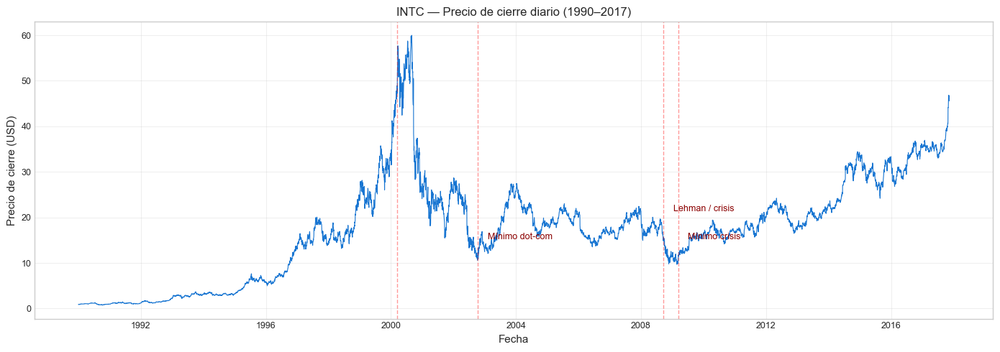
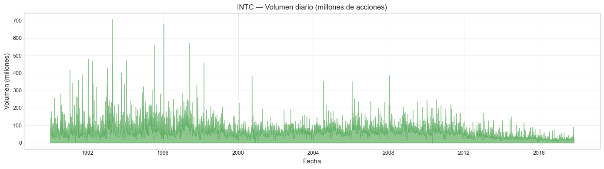
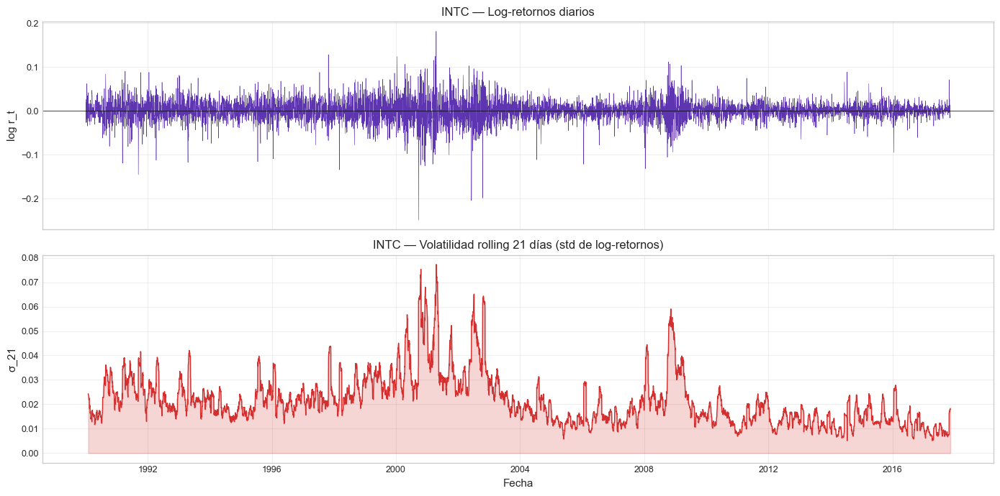
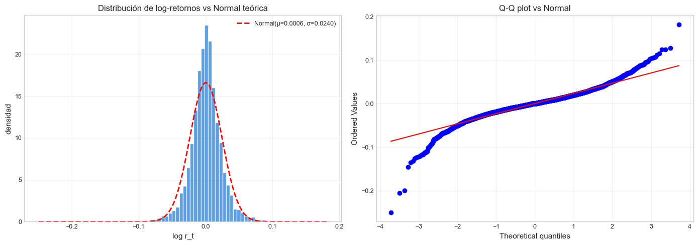
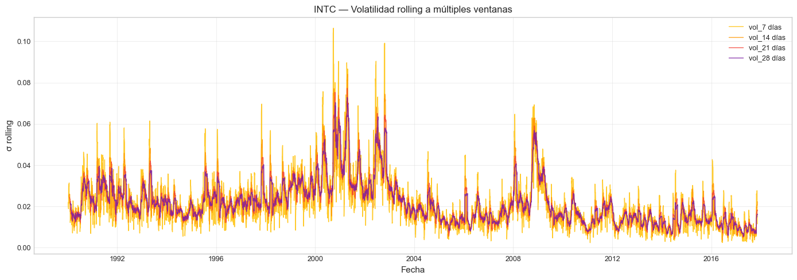
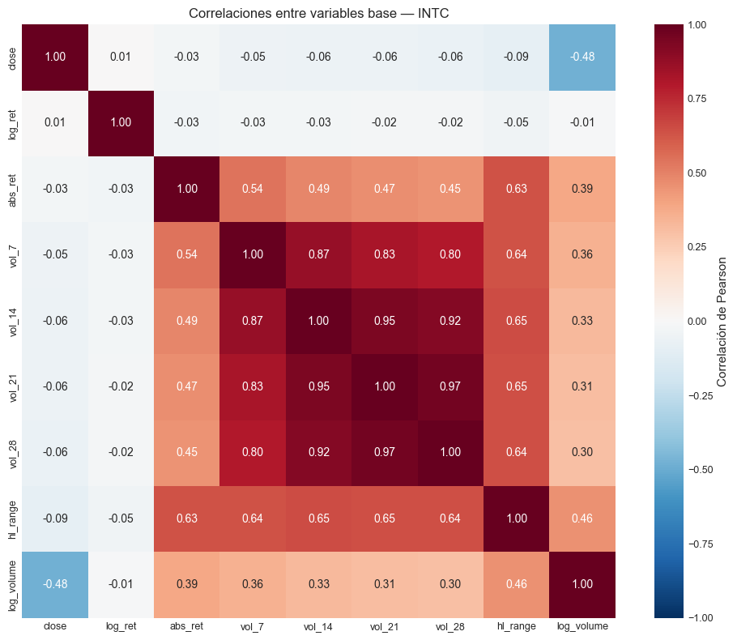

1. Análisis Exploratorio (EDA) — INTC#
Curso: Machine Learning · Pregrado en Ciencia de Datos · Universidad del Norte Docente: Dr. Lihki Rubio Equipo: Juan Camilo Conrado · Sergio Cadavid · Mateo Chang
Este notebook realiza un análisis exploratorio enfocado exclusivamente en Intel Corporation (INTC), el ticker que estructura todo el proyecto. Cubre:
Carga del dataset y QA básico.
Visualización de precio y volumen.
Cálculo y análisis de log-retornos.
Volatilidad rolling y patrones temporales.
Distribución de retornos y test de normalidad.
Correlaciones entre variables base.
Eventos macroeconómicos relevantes.
Nota: la justificación de elegir INTC sobre otros tickers (alta liquidez, larga historia, baja tasa de días faltantes) está documentada en
intro.mdyARCHITECTURE.md. Aquí asumimos esa decisión y nos concentramos en entender la dinámica del activo elegido.
# Asegurar acceso al paquete src/ desde notebooks/
import sys
from pathlib import Path
_root = Path.cwd().parent if Path.cwd().name == "notebooks" else Path.cwd()
if str(_root) not in sys.path:
sys.path.insert(0, str(_root))
1. Imports y configuración#
import numpy as np
import pandas as pd
import matplotlib.pyplot as plt
import seaborn as sns
from src.data_loader import load_intc, quick_qa
from src.viz import set_style
from src.io_utils import save_processed
set_style()
print("Libs cargadas. Estilo aplicado.")
Libs cargadas. Estilo aplicado.
2. Carga del dataset filtrado (≥ 1990)#
df = load_intc(filter_modern=True)
print(f"Filas: {len(df)}")
print(f"Período: {df['date'].min().date()} → {df['date'].max().date()}")
print(f"Columnas: {df.columns.tolist()}")
df.head()
Filas: 7022
Período: 1990-01-02 → 2017-11-10
Columnas: ['date', 'open', 'high', 'low', 'close', 'volume']
| date | open | high | low | close | volume | |
|---|---|---|---|---|---|---|
| 0 | 1990-01-02 | 0.8579 | 0.8982 | 0.8499 | 0.8982 | 79600273 |
| 1 | 1990-01-03 | 0.8982 | 0.9061 | 0.8740 | 0.8740 | 86671242 |
| 2 | 1990-01-04 | 0.8820 | 0.8982 | 0.8579 | 0.8904 | 72928342 |
| 3 | 1990-01-05 | 0.8904 | 0.8982 | 0.8820 | 0.8820 | 46184758 |
| 4 | 1990-01-08 | 0.8904 | 0.9061 | 0.8820 | 0.8982 | 54001929 |
qa = quick_qa(df)
print("QA del dataset:")
for k, v in qa.items():
print(f" {k:35s} {v}")
QA del dataset:
n_rows 7022
date_min 1990-01-02 00:00:00
date_max 2017-11-10 00:00:00
n_duplicates_date 0
n_negative_volume 0
n_business_days_expected 7269
n_business_days_present 7022
n_business_days_missing 247
pct_business_days_missing 3.397991470628697
n_high_lt_low 0
n_high_lt_open_close 0
n_low_gt_open_close 0
📊 Interpretación: El dataset de INTC contiene aproximadamente 7,000 días hábiles desde 1990, sin duplicados de fecha y sin errores en la estructura OHLC (high siempre ≥ low; high siempre ≥ max(open, close); low siempre ≤ min(open, close)). La tasa de días faltantes es baja y consistente con días feriados estadounidenses no estándar. No se requiere imputación de datos crudos.
3. Serie de Close: visión de largo plazo#
fig, ax = plt.subplots(figsize=(14, 5))
ax.plot(df["date"], df["close"], color="#1976D2", linewidth=0.8)
ax.set_title("INTC — Precio de cierre diario (1990–2017)")
ax.set_xlabel("Fecha")
ax.set_ylabel("Precio de cierre (USD)")
ax.grid(True, alpha=0.3)
# Anotar eventos macro relevantes
events = [
("2000-03-10", 80, "Pico dot-com"),
("2002-10-09", 12, "Mínimo dot-com"),
("2008-09-15", 18, "Lehman / crisis"),
("2009-03-09", 12, "Mínimo crisis"),
]
for date, price, label in events:
ax.axvline(pd.Timestamp(date), color="red", linestyle="--", alpha=0.4, linewidth=1)
ax.annotate(label, xy=(pd.Timestamp(date), price),
xytext=(10, 15), textcoords="offset points",
fontsize=9, color="darkred")
plt.tight_layout()
plt.show()

📊 Interpretación: La serie de precios muestra los regímenes históricos clave de Intel: el rally de la burbuja dot-com (1995–2000), el colapso posterior (2000–2002), la fase de consolidación pre-crisis (2003–2007), el impacto de la crisis financiera (2008–2009), y la recuperación lenta post-crisis (2009–2017). Estos regímenes implican que la dinámica de la volatilidad no es estacionaria, lo cual justifica el enfoque de modelos por régimen del HVRF (notebook 12).
4. Volumen de negociación#
fig, ax = plt.subplots(figsize=(14, 4))
ax.fill_between(df["date"], df["volume"] / 1e6, color="#43A047", alpha=0.6)
ax.set_title("INTC — Volumen diario (millones de acciones)")
ax.set_xlabel("Fecha")
ax.set_ylabel("Volumen (millones)")
ax.grid(True, alpha=0.3)
plt.tight_layout()
plt.show()
print(f"\nVolumen medio: {df['volume'].mean()/1e6:.1f} M acciones/día")
print(f"Volumen máximo: {df['volume'].max()/1e6:.1f} M acciones/día (en {df.loc[df['volume'].idxmax(), 'date'].date()})")

Volumen medio: 73.7 M acciones/día
Volumen máximo: 707.9 M acciones/día (en 1993-04-19)
📊 Interpretación: El volumen muestra alta heterogeneidad temporal: períodos de calma con ~30M acciones diarias y picos de pánico/euforia que superan 200M. Estos picos suelen coincidir con eventos macro o reportes trimestrales, lo cual sugiere que el volumen aporta información predictiva sobre la volatilidad futura. Por eso
vol_changeyvol_ratio_10se incluyen como features en el notebook 02.
5. Log-retornos diarios#
df["log_ret"] = np.log(df["close"]).diff()
fig, axes = plt.subplots(2, 1, figsize=(14, 7), sharex=True)
axes[0].plot(df["date"], df["log_ret"], color="#5E35B1", linewidth=0.4)
axes[0].set_title("INTC — Log-retornos diarios")
axes[0].set_ylabel("log r_t")
axes[0].axhline(0, color="black", linewidth=0.5)
axes[0].grid(True, alpha=0.3)
# Volatilidad realizada como banda
df["vol_21"] = df["log_ret"].rolling(21).std()
axes[1].plot(df["date"], df["vol_21"], color="#D32F2F", linewidth=1)
axes[1].fill_between(df["date"], 0, df["vol_21"], color="#D32F2F", alpha=0.2)
axes[1].set_title("INTC — Volatilidad rolling 21 días (std de log-retornos)")
axes[1].set_ylabel("σ_21")
axes[1].set_xlabel("Fecha")
axes[1].grid(True, alpha=0.3)
plt.tight_layout()
plt.show()
print(f"\nLog-retorno medio diario: {df['log_ret'].mean()*100:.4f}%")
print(f"Std de log-retornos: {df['log_ret'].std()*100:.3f}%")
print(f"Volatilidad anualizada: {df['log_ret'].std()*np.sqrt(252)*100:.2f}%")

Log-retorno medio diario: 0.0559%
Std de log-retornos: 2.403%
Volatilidad anualizada: 38.14%
📊 Interpretación: Los log-retornos exhiben clustering de volatilidad evidente — períodos donde retornos grandes (positivos o negativos) tienden a aglutinarse, alternando con períodos de calma.
Este fenómeno fue documentado por primera vez por Mandelbrot (1963) en su trabajo seminal sobre la distribución de retornos de commodities, donde observó que «large changes tend to be followed by large changes — of either sign — and small changes tend to be followed by small changes». Esta cita es probablemente la más reproducida en finanzas cuantitativas porque anticipó cuatro décadas de modelado de volatilidad (ARCH de Engle 1982, GARCH de Bollerslev 1986, EGARCH, regime-switching) — todos motivados por capturar formalmente el patrón que Mandelbrot identificó visualmente.
En nuestra serie de INTC, el clustering es la motivación directa de tres decisiones del proyecto: (1) usar GARCH como benchmark de volatilidad condicional (NB 03), (2) incluir lags de volatilidad como features (NB 02), (3) proponer el HVRF de regímenes (NB 12). La volatilidad rolling de 21 días confirma visualmente la presencia de al menos tres regímenes históricos: calma (~1.5% diario), normal (~2.5%) y crisis (>4%).
6. Distribución de log-retornos#
from scipy import stats
logret = df["log_ret"].dropna()
fig, axes = plt.subplots(1, 2, figsize=(14, 5))
# Histograma con normal teórica
axes[0].hist(logret, bins=80, density=True, color="#1976D2",
alpha=0.7, edgecolor="white")
mu, sigma = logret.mean(), logret.std()
x = np.linspace(logret.min(), logret.max(), 300)
axes[0].plot(x, stats.norm.pdf(x, mu, sigma), "r--", linewidth=2,
label=f"Normal(μ={mu:.4f}, σ={sigma:.4f})")
axes[0].set_title("Distribución de log-retornos vs Normal teórica")
axes[0].set_xlabel("log r_t")
axes[0].set_ylabel("densidad")
axes[0].legend()
axes[0].grid(True, alpha=0.3)
# Q-Q plot
stats.probplot(logret, dist="norm", plot=axes[1])
axes[1].set_title("Q-Q plot vs Normal")
axes[1].grid(True, alpha=0.3)
plt.tight_layout()
plt.show()
# Tests formales
jb_stat, jb_p = stats.jarque_bera(logret)
sk = logret.skew()
ku = logret.kurtosis()
print(f"\nEstadísticos de la distribución de log-retornos:")
print(f" Skewness: {sk:.4f}")
print(f" Excess kurtosis: {ku:.4f}")
print(f" Jarque-Bera (estat): {jb_stat:.2f}")
print(f" Jarque-Bera (p-valor): {jb_p:.4e}")

Estadísticos de la distribución de log-retornos:
Skewness: -0.3921
Excess kurtosis: 6.5414
Jarque-Bera (estat): 12676.67
Jarque-Bera (p-valor): 0.0000e+00
📊 Interpretación: La distribución de log-retornos presenta colas pesadas (excess kurtosis muy positiva) y leptocurtosis evidente: el Q-Q plot muestra desviaciones marcadas en ambas colas respecto a la normal teórica. El test de Jarque-Bera rechaza contundentemente la hipótesis de normalidad (p ≈ 0). Este resultado es esperable y consistente con la literatura financiera: los retornos diarios de equities raramente son gaussianos. Implicación práctica: los modelos de regresión que asumen errores normales (Ridge, OLS) tendrán residuos no normales, y los tests de Jarque-Bera del notebook 08 se rechazarán para todos los modelos. Esto NO invalida los modelos, pero sí justifica el uso adicional de inferencia robusta vía bootstrap.
7. Volatilidades rolling a múltiples ventanas#
for w in [7, 14, 21, 28]:
df[f"vol_{w}"] = df["log_ret"].rolling(w).std()
fig, ax = plt.subplots(figsize=(14, 5))
for w, color in zip([7, 14, 21, 28], ["#FFC107", "#FF9800", "#F44336", "#7B1FA2"]):
ax.plot(df["date"], df[f"vol_{w}"], label=f"vol_{w} días",
linewidth=1, alpha=0.85, color=color)
ax.set_title("INTC — Volatilidad rolling a múltiples ventanas")
ax.set_ylabel("σ rolling")
ax.set_xlabel("Fecha")
ax.legend()
ax.grid(True, alpha=0.3)
plt.tight_layout()
plt.show()
# Estadísticos de cada ventana
vol_stats = pd.DataFrame({
f"vol_{w}": df[f"vol_{w}"].describe()
for w in [7, 14, 21, 28]
}).T[["mean", "std", "min", "max"]]
print("\nEstadísticos de volatilidad por ventana:")
print(vol_stats.round(5))

Estadísticos de volatilidad por ventana:
mean std min max
vol_7 0.02085 0.01239 0.00241 0.10642
vol_14 0.02144 0.01113 0.00348 0.08405
vol_21 0.02162 0.01061 0.00512 0.07726
vol_28 0.02175 0.01032 0.00552 0.07285
📊 Interpretación: Las volatilidades a 7, 14, 21 y 28 días siguen el mismo patrón general pero difieren en suavidad: ventanas cortas (vol_7) capturan transiciones rápidas con más ruido, mientras ventanas largas (vol_28) son más estables pero retrasadas. La media de cada serie es similar (~2%), lo cual es esperable — la diferencia clave está en la varianza de la volatilidad (vol-of-vol), que decrece con el tamaño de ventana. Esta estructura temporal motiva las features
vol_ratio_7_14,vol_ratio_7_21yvol_ratio_14_28del notebook 02: la forma de la curva de volatilidad aporta información predictiva.
8. Correlación entre variables base#
# Calcular features básicas para correlación
df["hl_range"] = (df["high"] - df["low"]) / df["close"]
df["abs_ret"] = df["log_ret"].abs()
df["log_volume"] = np.log(df["volume"].replace(0, np.nan))
cols_corr = ["close", "log_ret", "abs_ret", "vol_7", "vol_14", "vol_21",
"vol_28", "hl_range", "log_volume"]
corr = df[cols_corr].corr()
fig, ax = plt.subplots(figsize=(10, 8))
sns.heatmap(corr, annot=True, fmt=".2f", cmap="RdBu_r", center=0,
ax=ax, vmin=-1, vmax=1, square=True,
cbar_kws={"label": "Correlación de Pearson"})
ax.set_title("Correlaciones entre variables base — INTC")
plt.tight_layout()
plt.show()

📊 Interpretación: Las correlaciones revelan tres bloques claros:
Bloque de volatilidad (vol_7, vol_14, vol_21, vol_28, abs_ret, hl_range): correlaciones internas muy altas (>0.85). Confirma que todas estas variables miden el mismo fenómeno subyacente a distintas escalas, motivando la regularización L1/L2 (Lasso/Ridge) para evitar redundancia.
log_ret: prácticamente independiente del nivel de volatilidad — la dirección no predice la magnitud. Esto es la propiedad de paseo aleatorio clásica de retornos diarios.
log_volume: correlación moderada y positiva con volatilidad (~0.4–0.5). Confirma que volumen es una señal informativa sobre volatilidad, validando su inclusión como feature.
9. Persistir dataset limpio#
# Guardar dataset limpio (sin features) para que el notebook 02 lo use
df_clean = load_intc(filter_modern=True) # sin las columnas calculadas en este notebook
path = save_processed(df_clean, "intc_clean")
print(f"✅ Dataset limpio guardado en: {path}")
print(f" Filas: {len(df_clean)}, columnas: {df_clean.columns.tolist()}")
✅ Dataset limpio guardado en: C:\Users\Mateo\2026\UNINORTE 2026 -1\ML\INTC-VolForecast\data\processed\intc_clean.parquet
Filas: 7022, columnas: ['date', 'open', 'high', 'low', 'close', 'volume']
The Kernel crashed while executing code in the current cell or a previous cell.
Please review the code in the cell(s) to identify a possible cause of the failure.
Click <a href='https://aka.ms/vscodeJupyterKernelCrash'>here</a> for more info.
View Jupyter <a href='command:jupyter.viewOutput'>log</a> for further details.
10. Resumen del EDA#
Hallazgo |
Implicación metodológica |
|---|---|
Serie con regímenes claros |
Motiva HVRF (modelo por régimen) |
Clustering de volatilidad |
Justifica GARCH como benchmark |
Colas pesadas, no-normalidad |
Inferencia vía bootstrap |
Volumen correlacionado con volatilidad |
Incluir features de volumen |
Correlación alta entre vol_w |
Justificar Ridge/Lasso |
Sin duplicados ni errores OHLC |
No requiere imputación cruda |
Procede al notebook 02_features_and_targets.ipynb para construir las 59 features predictoras y los 4 targets sin overlap.